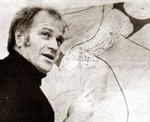
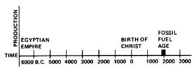
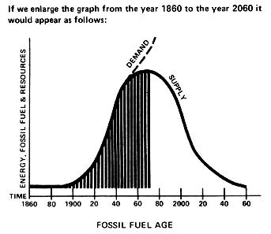
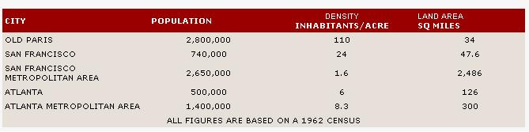

It was back in June of this year that MOTHER received a letter from George H. Ramsey, Associate Professor of the School of Architecture at the Georgia Institute of Technology in Atlanta. "I just wanted to let you know that I read your magazine," he said, "and that you have a friend here at Georgia Tech. I've done a little bit of village planning and I might be of some help when you get ready to start on your self-contained Ecological Research Center. Let me know if you want to talk about it and, by the way, do you know of any good sources of heat pipes?"
Well, we wrote back and told George to get in touch with Isothermics, Inc. (P.O. Box 86, Augusta, New Jersey 07822) and that we most certainly were interested in picking his brain for Research Center ideas, And that's as far as the matter went.
Until late this September, when George gave us a ring and asked if he could bring some Georgia Tech architectural students up to see MOTHER's offices. "What we really have in mind," he said, "is to get your ideas about the Research Center so we can spend the next semester doing some work on the concept. "
Well, we weren't really too happy about the offer because we were just finishing the fall catalogues for MOTHER'S Bookstore and the General Store and we were in the middle of this issue of the magazine and a week behind on the deadline for our newspaper feature and some guys on the West Coast wanted to do a TV show about us and we were trying to push the solar-heated house book through and a design firm in Detroit was working on our little car and we had magazines to ship and mailings going out to dealers and merchandise and books to order for the fall season and now here was this professor, for crying out loud, who wanted us to sit down and think about what the Research Center should be like so he could have a "real" project for some college class to work on.
Damn. Well, OK. "Come on in, " we said, "and we'll try to concentrate long enough to sort of halfway intelligently let you know what we want the Research Center to do. "
And, sure enough, Ole George did bring a dozen junior-level architectural students on in to Hendersonville early in October. And we spent a good long day struggling to find some way to turn our vague, country boy concepts into design parameters that would mean something to people trained (and training) in the field of community planning.
Evidently it was all worthwhile for the folks on the other end of the exchange and the students were able to pick a few nuggets from a rather large pile of chaff... because a class of 21 or 22 people are now hard at work down at Georgia Tech on six or eight different designs for the Center.
And-despite our foot-dragging-the exchange was extremely gratifying to the folks on this end. Because we became acquainted with 12 concerned, capable and rather impressive architectural students. So concerned, capable and impressive that we're now anxious to meet the rest of George's class and we're excitedly awaiting the unveiling of everyone's renderings and models of the forthcoming proposed designs for the Research Center.
Because somewhere in the early stages of our day-long discussion, it became apparent that George H. Ramsey was not your usual bookbound professor of architecture. Why, this guy had just spent the summer actually pouring concrete for a house he's building out in his home state of Oklahoma. He knows what it's like to get his hands dirty! Ole George is all right.
And he has the book-learning and theory too: Ramsey studied at the University of Tulsa, got his Bachelor of Architecture degree from Oklahoma State University and received an Architect DPLG (the equivalent of a Ph.D.) from the Ecole Nationale Superieure des Beaux Arts School of Architecture at the University of Paris in France. George won the Medaille d' Argent in France's 1963 National Student Competition for the design of a 500-room hotel, the Medaille de Bronze in 1965 for the "Best Individual Thesis Project of the Year" and (in the United States) a National Association of Collegiate Schools of Architecture grant to design and teach a graduate course in Energy Conservation and Environmental Design.
This guy just might be able to inspire a class into designing a first-rate Research Center . . . especially since he's been integrating solar and wind energy systems into his course work for at least two years and since he organized and directed a "first" major conference on Low Impact Energy Systems at Georgia Tech which featured Selwyn Bloom (Energy Conservation in Building Design), Dr. Erich Farber (Solar Energy) and Dr. Phillip Coulter (Wind Energy).
Dr. Ramsey, of course, has many more honors and credits to his name but I imagine you've already read enough to know that he seems to be about as ideally qualified as any professor of architecture in the country to tackle MOTHER'S Research Center. If you need any further convincing, however, the following Plowboy Paper should do the job.
The paper is taken from an address Dr. Ramsey gave in the spring of 1974 at the annual "Tech Today" conference held on the Georgia Tech campus. The speech was written before 12% interest rates and the summer/fall plunge of the stock market. Which is to say that enough of Dr. Ramsey's predictions have already come true to add a certain amount of weight to the rest of his view of the future.
While George originally meant his address to be a rather specialized discussion of one facet of modern life (the relationship of architectural design-particularly urban planning-to energy consumption), it is interesting to note how often his thoughts spill over into other fields and have a far wider application. That's the way it is with the environment, though . . . you can't touch a spider without shaking its whole web. Professor George Ramsey knows that, and I wish a bunch of other professors did too.
And by the way: Professor Ramsey has another very endearing quality for a man of his stature. He likes to be called George. I think we're going to get along just fine . . . and we'll be showing you those Research Center models once they're completed.
The use of energy has long been associated with prosperity, economic development and quality of life. It has provided fuel for our transportation and the heating and cooling we use in our homes. It has been the driving force behind our construction, land development, industry and business.
Energy is also intimately linked with our current concepts of freedom of movement, expansion, consumption and growth. Its reduced availability, accompanied by diminishing national resources, threatens our entire life pattern and ultimately will change all current thought in schools of planning and architecture. Ultimately, the reduced availability of energy will change society itself.
This process, in fact, is already well underway and is evidenced at every level . . . from a two-year staff study of "The Potential of Energy Conservation" by the President's Office of Emergency Preparedness . . . through nationally reduced speed limits . . . to lowered thermostat settings in our homes. Americans are, voluntarily or involuntarily, changing their lifestyles and the process will be continuous from this point forward in time. The graphs that accompany this article indicate the seriousness of our condition and the necessity for change.
These graphs illustrate two critical points: [1] the supply of fuel, resources and energy will never again meet demand and [2] we should note that most of the national and urban complexes in this country have been built during an era of assumed unlimited energy.
The major metropolitan centers of Europe-Rome, Paris, London, Moscow, etc.-were well established prior to 1860 and were essentially designed about pedestrian movement within the city and horse-drawn agrarian supply from the surrounding environment. This was particularly true of small communities . . . but even the larger cities of Europe have traditionally consisted primarily of three- and four-story walkups and have been extremely compact. The inhabitants have usually lived over their shops or within a 15-minute walk of their places of employment.
This pattern was not particular to any nation. It was universal and simply a result of functional necessity and (in part) the building technology of the era in which the cities of Europe were established. Over a period of hundreds of years, this approach to urban planning became a cultural pattern in the countries where it existed and contemporary additions to European cities essentially maintain that pattern.
Another important reason for the continuing compactness of metropolitan areas in Europe is the population/land ratio of the countries involved. France, for example, has 1/3 of the United States' population living in an area smaller than Texas. Holland is even more severely cramped. The open land in such nations is precious-as are the limited resources-and has been for centuries.
By contrast, the first white settlers in America found a vast, open wilderness possessing riches beyond imagination. There seemed to be little need for preservation or conservation of land, water or other resources. Each new load of immigrants-unhampered by the traditions which restricted their brothers back in Europe-were free to seek their fortunes in almost any way they saw fit. Our way of life soon became one of "use it up and move away".
The advent of the Industrial Revolution-and particularly the automobile-during our nation's formative years increased both the speed and scale of this rapidly developing tradition. High energy consumption became our mainstay while land, water and natural resources were destroyed at an ever increasing rate.
We became a throwaway society to the point of total absurdity: Any person could hitch the equivalent of 350 horses to 4,000 pounds of comfort zone (including stereo) and drive 16 miles to purchase a one-pound loaf of bread or a one-ounce pin. We even developed throwaway houses (mobile homes) and no one minded expanding all national and state highways-at least in part-for their accommodation. The taxpayers paid for the roads while the mobile home industry boasted of their products' low prices.
As a result of our "live it up" heritage, we find today that [1] we have enormously wasteful habits (it takes the equivalent energy of 80 people to support one average American in his daily life pattern), [2] every aspect of life in the United States must be reevaluated in terms of the energy it consumes and [3] as we rush toward the limits of our natural resources, our system-which is based on the increasing consumption of such resources-faces a serious threat of breakdown.
Since we have only to look about us to document our wasteful habits, let us move on to point two of the last paragraph and evaluate the energy consumed by one segment of our society. And, since approximately 80% (my own personal evaluation) of America's energy is wasted in our urban centers, I find it interesting to compare an automobile-oriented American metropolitan area to a more pedestrian-directed European city (see accompanying chart),
PEDESTRIAN VS. AUTOMOBILE CITIES
When we compare the population/land ratios of the San Francisco Metropolitan Area and the Atlanta Metropolitan Area to the population/land ratio for Old Paris, we find that the two American cities consume somewhere between 18 and 70 times more land than the older European city. Although the actual median of 18 and 70 is 44, let's be conservative and say that the average U.S. city consumes only 30 times the amount of land that its European counterpart needs to house a given population.
This, of course, implies that American city systems-police, fire, transportation, etc.-cover 30 times the area that similar systems cover in Europe. Which, obviously, makes them more expensive to construct and maintain . . . and our taxpayers have to support that additional burden,
There are other implications: The plumbing and wiring networks in our cities are 30 times as long as they really need to be. Our children must travel 30 times farther to school and our workers must go 30 times farther to work. We might even say that U.S. cities are 30 times less efficient and 30 times less human than their European counterparts.
Perhaps that explains why, without unduly saddling its citizens with taxes, Paris has developed one of the world's largest park systems and lined its streets with trees, fountains and works of art for all-rich or poor-to enjoy. Or why Paris was able to construct a 105-mile-long metro system in 1900 and-in 1930-to develop a central steam heating system for 3/5 of the city (the fuel is the town's rubbish).
And that's not the worst of it (when viewed from our end of the bargain). For, interestingly enough, if Paris really is an average of 30 times more land efficient than the average U.S. city, it may well be 100 times more energy efficient due to the fact that some 85% of the inhabitants of Paris walk, ride the bus or use the metro to get around. And, when one considers the total energy system-that is, material extraction for the production of automobiles; the cost of building and maintaining roads (which are 10 to 100 times wider than pedestrian ways) and cars; the enormous cost of constructing and the uglification of parking facilities: the loss of recreational, agricultural and living space to highways; and the pollution which private cars produce-it's easy to imagine that a pedestrian-oriented city of Europe could be 1,000 times more energy efficient than an American town which has surrendered to the automobile.
California, as I'm sure you are aware, has now permitted 40% of that state's fertile valleys to be covered by suburbia and the attendant highways that attempt to link work and home. The loss of this agricultural land is felt by all of us daily here in Atlanta.
Which points up another area of enormous national waste in this country: that is, the way in which we distribute our food and produce. Just as America cannot permit itself to become dependent upon foreign oil, neither can Georgia grow to rely too heavily on California's fruits and vegetables. Recent truck strikes dramatically illustrated the folly of placing too much trust on such extended lines of supply.
Dr. Erich Farber, Director of the Solar Energy Research Facility at the University of Florida at Gainesville, recently found that a carrot traveled 6,000 miles before it was consumed in Atlanta and that the milk in some local stores came-refrigerated-all the way from the city of Cincinnati.
Only 20 years ago, the counties surrounding Atlanta were nearly self-sufficient. Today they're covered with suburbanites . . . trusting souls completely dependent upon food and other products produced in distant areas which, in turn, are largely organized under the same stress pattern.
So many states have now moved toward the production of one or only a few crops that a fairly localized soil failure or spell of inclement weather or attack of devastating insects could cripple the nation. This situation cannot long endure and states-even counties-should immediately begin to switch back to a more balanced production of food. As our sources of fuel dry up, today's wasteful transportation and distribution of the things we eat will become prohibitively expensive.
It is obvious-as even this short discussion of the problem is beginning to illustrate-that the so-called energy "crisis" is not a separate, isolated or one-time phenomenon.
The very lifeblood of our society has always been a seemingly endless supply of low-cost energy and other natural resources. Now (despite repeated warnings over a long period from numerous environmentalists, conservationists, analysts, etc.) we "suddenly" are finding ourselves near the bottom of the richest and most easily tapped sections of our stockpile. At the very time our energy sources are drying up, in other words, we need more and more energy to mine less accessible minerals, farm increasingly marginal land, produce more potent fertilizer, operate our continually sprawling cities, transport raw materials and finished goods over greater distances, clean up the pollution that this increasingly intensive activity produces, and so on.
As a result, we do not face one single, neat little crisis (labeled "energy") in America at this time. If we continue our present course, we're up against potential catastrophe in, at a minimum, the following areas:
ENERGY BREAKDOWN: We've already experienced regional brownouts and spot shortages of heating and motor fuel. Such disruptions will occur-sooner or later-on a national scale. As we become more desperate, we'll eventually invest an exponential consumption of energy in a frantic search for new energy . . . leaving ourselves, quite probably, with a negative gain.
RESOURCE DEPLETION: Our most easily exploited natural resources have largely been tapped. The cream has already been-or is currently being-skimmed away and we face, at best, a future diet of low-fat milk. The last year has seen supply failing to meet demand in a number of fields by six months to a year. Many items are simply "not available until further notice". The building industry, although depressed, can look forward only to severe shortages of all supplies . . . particularly steel, hardwoods, paper, plywood glues and plastics. A U.S. Geological Survey suggests that new construction could grind to a virtual halt in this country as early as 1985 due to a lack of resources.
FOOD SHORTAGES: We are already seeing an inflationary rise in the price of food. Next will come a real shortage with its attendant hoarding and the stockpiling of weapons for the protection of those hoards. In a desperate effort to feed ourselves, we'll probably allow agribusiness to make a last assault on the Great Plains. This may well result in an almost complete removal of all plants, trees and animals that we do not consider to be edible (thanks to pressure from mankind, life forms are already becoming extinct at a rapidly increasing rate). We can expect a further "mining" of our soil . . . more severe flooding and droughts as the land loses the ability to absorb moisture . . . greater losses to insects, forest fires and other natural calamities as we intensify the monoculture of crops.
Nor will this steady path downward be confined to the land: Jacques Cousteau, the noted oceanographer, estimates that the amount and vitality of marine life off U.S. shores has been diminished by 50% since 1937. Future pollution and overfishing will only accelerate this trend and, finally, result in the extinction of cod, tuna, swordfish, squid, shrimp and other seafood.
Professor Ramsey, author of the accompanying Plowboy Paper, is certainly no promoter of high-rise buildings. He says that such structures, as used in their current architectural and planning form, produce the following ten undesirable results:
[1] They are the helpmate and counterbalance of suburbia. High-rises and suburbia necessitate each other.
[2] High-rise buildings consume 2,000 to 8,000 times more mechanized energy for their operation and the movement of people and goods than do three- and four-story walk-ups. They also have a high thermal loss from the windrake of their high surfaces.
[3] Such structures preclude the use of solar energy on all buildings which fall within their shadow patterns.
[4] High-rises eliminate diversity of people and functions (such "hindrances to progress" are, of course, removed from the area before such a building is constructed.)
[5] In their final pattern (New York City), high-rise buildings eliminate all direct sun from the street . . . thus largely precluding plantlife, shade, light patterns, oxygen, visual perception and delight on that level.
[6] Vertical construction initiates and feeds the land-tax ripple effect which eventually drives both small business and the individual homeowner away from the area.
[7] High-rises enormously overload all city utilities and services, particularly the street, water and sewage systems. To cover 85% of the remaining area of a city with concrete (for parking, etc.) is an insult bordering on criminality to both land and people.
[8] Building vertically helps create high crime areas due to the evacuation of workers every weekday evening at 5 p.m. One invariably finds both high poverty and crime areas adjacent to new high-rise complexes.
[9] High-rises deplete the city tax base. Such structures do not pay enough taxes to cover the additional strain they put on city services. Case Documentation: San Francisco.
[10] High-rise buildings are a bore. If you've seen the 4th floor of one, you've seen the 24th floor. Case Study Documentation: The Ultimate High-rise by Bruce Brugmann, Greggar Sletteland and the Bay Guardian staff.
POLLUTION: Today's spreading oil, pesticide, insecticide, herbicide, detergent and other stains will continue to spread in the future. As will the land-, air- and water-contaminating wastes from our cities. Already dangerous levels of lead, chlorinated hydrocarbons and other pollutants in mother's (and other) milk will keep on rising. The nitrate poisoning of our water supplies (from massive agribiz crop injections of nitrogen fertilizer) will become an even greater problem tomorrow than it is today. We can look forward to more and bigger spills of nuclear waste. If we continue our present course, all the rivers will eventually foam and the lakes die. There will be no insects, no birds, no fish, no forests, no animals, no life. All will be quite "clean".
ECONOMIC FAILURE: Our current rate of inflation will accelerate and the dollar will almost certainly be devalued against gold . . . not once, but many times. Look for a decline in the stock market of over 200 points in less than a year. Interest rates will rise to 12%. We'll have a national annual deficit of 500 billion dollars.
COMPLETE URBAN BREAKDOWN: Enormous blighted areas stretch for miles upon miles in Detroit, Chicago, St. Louis, Philadelphia, New York, Newark, etc. The exodus of people and businesses from our cities to ever growing peripheral circles is expanding at a national rate of one mile of radius per year . . . leaving behind all accumulated municipal wealth: libraries, schools, theaters, courthouses, parks, etc. The remaining vacuum of 85% asphalt jungle is for those who cannot escape . . . their lives are to transpire between super expressways, parking lots, condemned buildings and old movie houses, while the escapees are astonished at the crime rate of those too poor to escape. Entire metropolitan areas have been left without a tax base to maintain city streets or provide adequate police or fire protection. This is not to mention the complete lack of urban space, sidewalk cafes, fountains, sculpture or simply a decent, pleasant, quiet place to be.
THE ALASKAN PIPELINE: It will take an enormous amount of materials and energy to develop the pipeline and the North Slope oil field which it will tap . . . an oil field which, if it were the sole source of petroleum for the U.S., would last a mere three years. An oil spill anywhere along the proposed pipeline will result in a larger petroleum-caused destruction of land and animals than any to date.
MASSIVE DEVELOPMENT OF NUCLEAR POWER: The fabrication of approximately 20 nuclear power plants per state, as the Atomic Energy Commission now plans, will be a disaster. Even if such a system can be made fail-safe-which it cannot unless a miracle positively does away with sabotage, war, homemade atomic bombs and the slightest imperfection in the cooling and storage of radioactive materials-the enormous cost of the undertaking will be a tremendous burden on the taxpayers of this country. And, even if the nuclear generation of power does work as perfectly as planned, it will create an astronomical amount of absolutely deadly radioactive waste that-as Dave Brower, head of Friends of the Earth says-will be around five times as long into the future as recorded history goes into the past. This is a terribly dangerous legacy to leave to our children and our children's children and the generations which-we hope-will follow.
STRIP MINING: The strip mining of five states-as proposed by "rational" politicians and energy company officials-to provide energy for the remaining 45 is no answer either. We simply can't afford the loss of cropland and living space. And, besides, what will we do when the stripable fuel is gone? Many of our synthetic products (and there's not enough natural ones to go around anymore) are derived from coal and oil and gas. Burning the last of the fossil fuels will preclude their use.
The preceding part of this address suggests insurmountable problems and, certainly, there is no easy way out of the bottomless pit into which we now plunge. Still, if we're willing to make the effort-and it will have to be a large one-we may yet have a faint hope of altering our destiny.
Although most past and present urban areas in the United States "just kind of happened" and-if planned at all-have been based on the false assumption that we'd always have unlimited energy and other natural resources, there is no reason for future towns to make the same mistake.
As a matter of fact, several very recent examples of what a U.S. town can be have already begun to map out dramatically more satisfying and ecologically sound ideas for a community. Leading this new trend is "Coldspring", a village of 12,800 people in 3,780 units on 370 acres. The town, designed by Moshe Safdie and currently under construction within the city of Baltimore, will be essentially pedestrian with only one road crossing its enormous tract of land. All breadwinners will work within walking distance of their homes, children will walk safely to school and local markets and boutiques will provide pedestrian shopping without the unnerving experience of driving and the resulting assault of pollution.
I believe we will have a much healthier and happier America if we apply, on a large scale, some of the guiding principles behind Coldspring and her sister villages. We must:
ACTIVELY REDUCE CONSUMPTION AND WASTE. In the planning and operation of our urban areas and throughout the rest of our society.
ESTABLISH PRIORITIES FOR THE USE OF ENERGY AND OTHER RESOURCES. The public, business, the professions and government must be coordinated in this undertaking. State land use policies must be established to ensure the preservation of town sites and agricultural and recreational acreage.
STOP URBAN SPRAWL. Either through designating land use (see above) or establishing legal limits to the size of our cities. Greenbelt peripheries should be provided around our urban areas.
STOP MAN'S ASSAULT UPON NATURE. We must redirect all new urban development to the already blighted areas of the inner city while establishing central city open spaces, parks, good schools and quiet. Roads and parking should be eliminated wherever possible and only service vehicles allowed into these new areas. High-rises, which have very poor energy performance records, should be kept to an absolute minimum. Building heights, in general, should be limited to three- and four-story walk-ups . . . thus eliminating elevators and simultaneously permitting the sun to reach street level for plant growth and the general health of the population.
INTRODUCE ENERGY AND URBAN IMPACT STUDIES FOR ALL NEW BUILDINGS. That is, if a building-even a one- or two-story, solar-heated structure-is placed so that its usage requires long-distance travel in privately owned vehicles by the public, it would not receive a construction permit.
ENCOURAGE MIXED ZONING. Travel (which directly consumes large quantities of energy), pollution and crime can all be reduced by mixed zoning which places a housing unit within walking distance of every anticipated new business or light industry employee. Light industries and businesses can also be encouraged to move into existing bedroom communities. If such production facilities are made attractive and non-polluting and are provided with little or no parking, their installation would service the immediate neighborhood rather than the city at large.
DIRECT NEW GROWTH TO NATURAL SITES OF BEAUTY. New villages and towns must be prohibited from agricultural land, they must be completely planned and their size must be limited. They can either have mixed employment or be dependent upon a major industry. Land surrounding new towns should be maintained for agriculture and recreation. The villages should be essentially designed for pedestrian traffic and leased cars can be provided for unusually long trips out of town.
IMMEDIATELY BEGIN BICYCLE PATHS THROUGHOUT OUR MAJOR CITIES. Studies have shown that as many as 20% of Americans would enjoy bicycling to work if they were provided with safe trails that were separate from automobile movements . . . or with streets reserved for bikes only, except for the cars of people living on those streets.
EMPLOY ALL-NATURAL ENERGY SYSTEMS. Solar, wind, water, tidal, methane . . . every possible non-polluting source of energy must be tested and-whenever possible-used in preference to fossil fuels, nuclear power and other polluting sources.
We can either intelligently go about saving and elongating the use of energy and resources in the United States or we can continue our present course until there is little remaining. Our decision will accurately define our concern for the nation and our children.
|
|
 |
 |
|
 |
 |
|